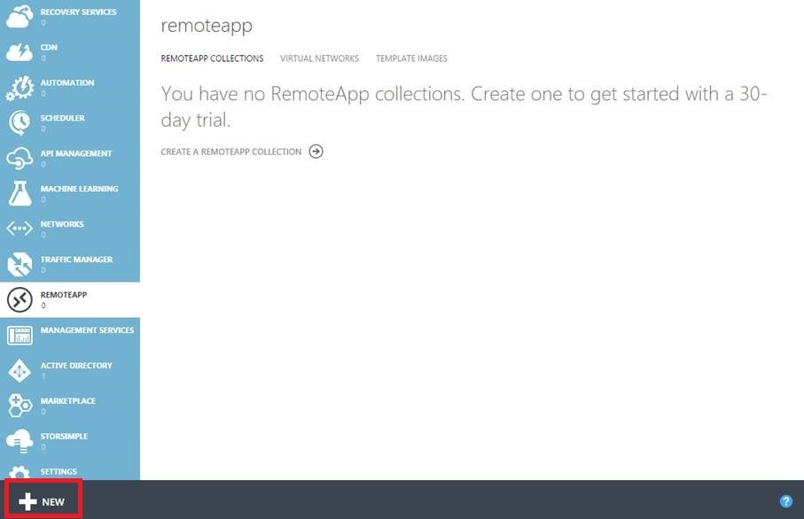
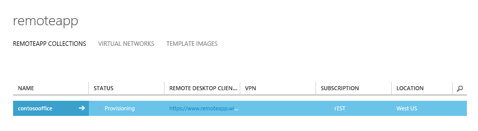
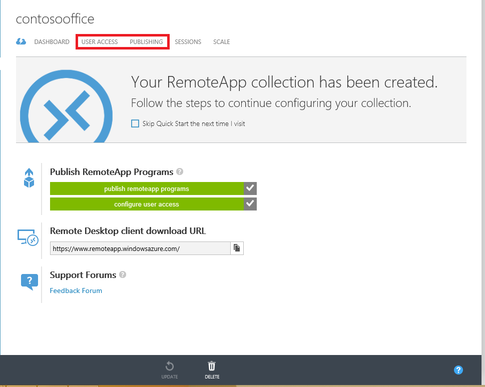
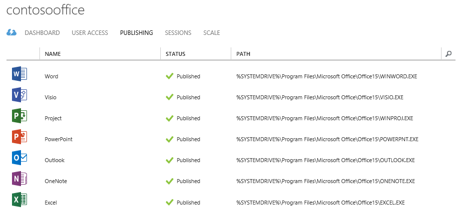
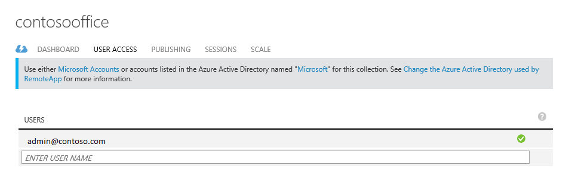
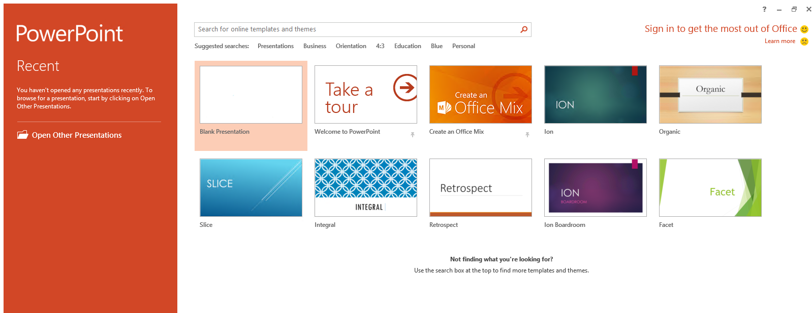

Get the same Office 365 experience on any device with Azure RemoteApp
[AZURE.IMPORTANT] Azure RemoteApp is being discontinued. Read the announcement for details.
This article will cover how to deploy Office 365 on any device in your company. Your users can get the same capabilities and UI experience on Android, Apple and Windows.
We will accomplish this using Azure RemoteApp by hosting Office 365 on scale-able virtual machines in Azure that users can connect to. This set of virtual machines we call a "cloud collection".
Create a cloud collection
First after you have created an Azure account, navigate to RemoteApp by clicking on the link on the left side. 
Then continue by clicking new on the bottom and "quick creating" a collection. Provide a name, the region, the subscription, the plan and the image "Office Proffesional 2013" that we provide.

Once you finish the form the collection creation process should start. This may take up to an hour or so.

Once the process is done, it will look something like this. If we click Publishing we can see that most Office applications have been published for us already. 

At this point you can also add more users that have access to this collection by clicking User Access. 
Now let's try out connecting to Office 365!
Connect to Office 365
We'll head over to https://www.remoteapp.windowsazure.com/, scroll down and click Download clients to install the Azure RemoteApp client on the device you're on. The screenshots below are for Windows.
Once the application starts you'll be asked to sign in with your Microsoft account (formerly called a "Live ID"), use the same one as your Azure account for now. When you're signed in you should see a notification about new invitations, click there and you should see a list like one below. Accept the invitation that matches your Azure account owner email.

What it looks like when there are new invitations.

Once you accept the invitation you should see all the Office apps in the Azure RemoteApp client.

When you click on any of these the application should start on the Azure virtual machine and you should be all set! Enjoy!

